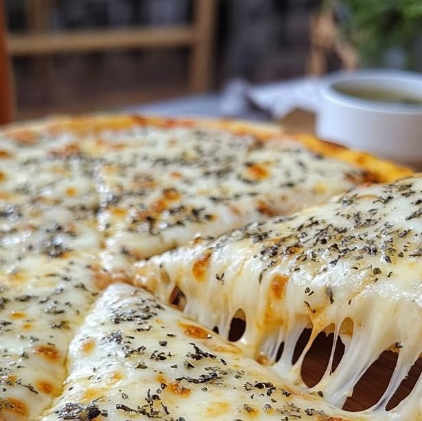
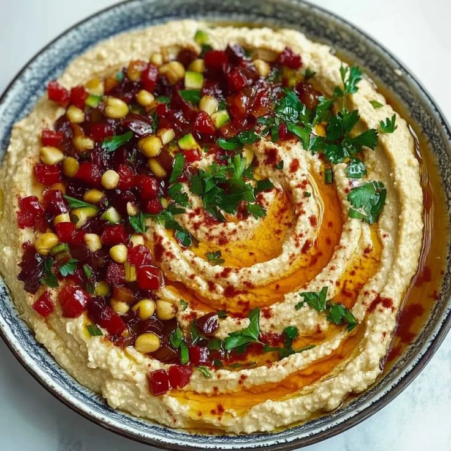
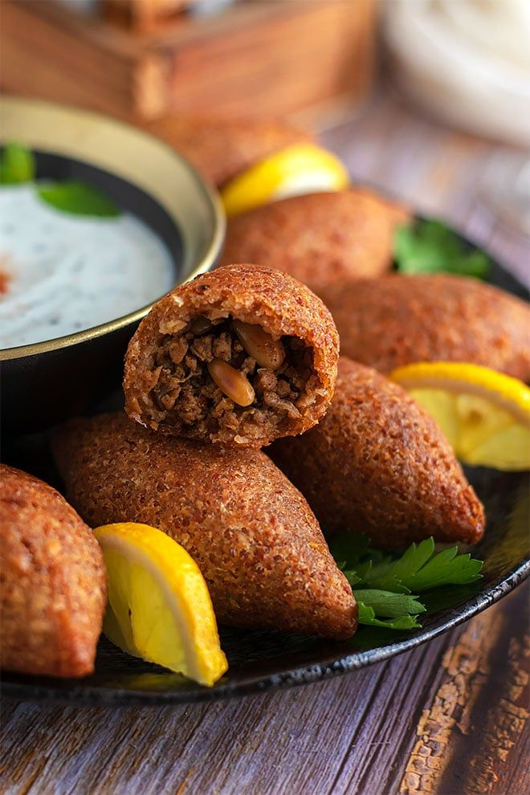
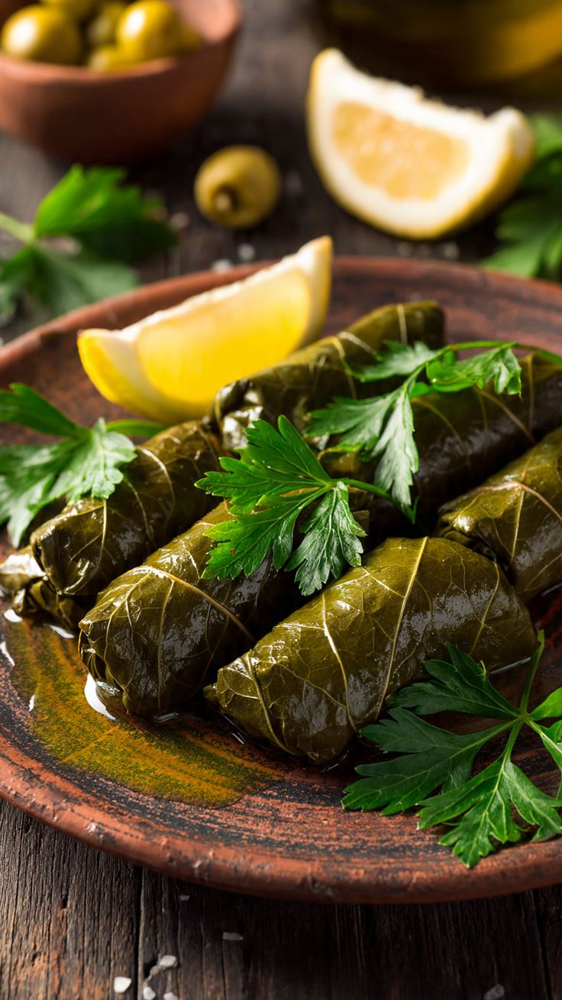
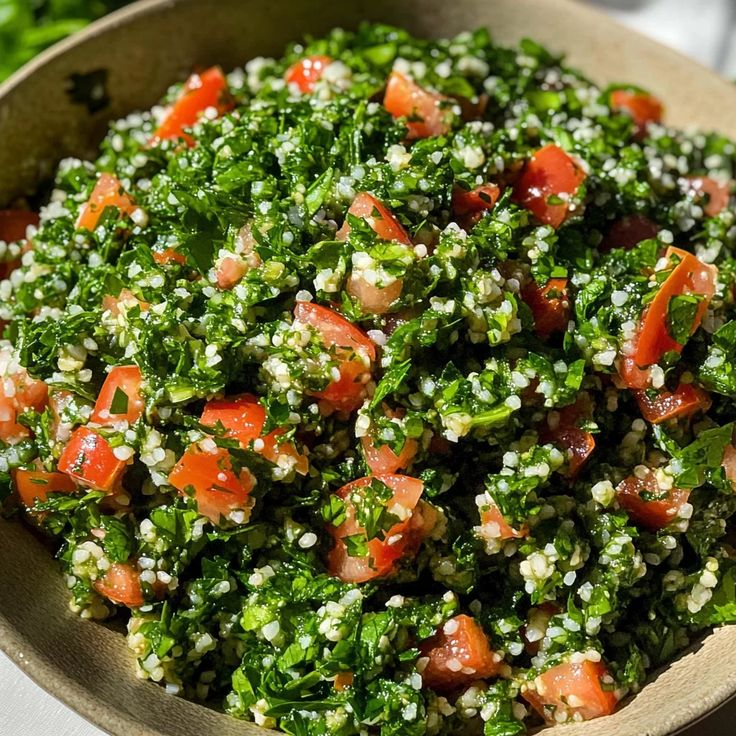
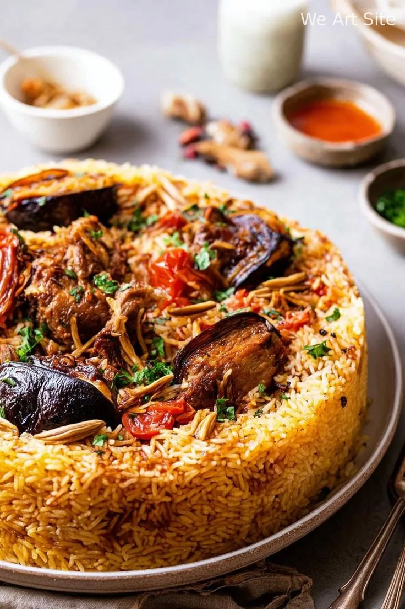

🇯🇵 Cuisine Japonaise
L'Art de la Précision
Saveurs du Japon à l'état pur — sushi exquis, wagyu fondant et techniques ancestrales perfectionnées.

Japanese GYOZA (Dumplings)
56 TND(8 piéces)6 ravioles grillées-vapeur, farce porc ibérique, truffe noire et gingembre confit, sauce ponzu maison. -NON HALAL-
Tokyo, Japon

Sushi Cru
96 TND(16 piéces)Délicat sushi au saumon cru, accompagné d'avocat fondant et de graines de sésame, sur un riz vinaigré parfaitement assaisonné. accompagné d'une sauce soja subtilement salée et sucrée. Option : Par Piéces .
Japon

Sushi Cuit
55 TNDUn sushi crunchy irrésistible : saumon cuit tendre à cœur, texture croustillante à l'extérieur, avocat crémeux et sauce soja douce et équilibrée. Option : Par Piéces .
Japon

Chicken Ramen
45 TNDBouillon parfumé et légèrement piquant, poulet délicatement mariné et nouilles soyeuses, sublimés par des épices soigneusement sélectionnées.
fukuoka, Japon

Katsu curry
35 TNDPoulet pané croustillant, nappé d'une sauce curry relevée et épicée, servi avec du riz moelleux pour une explosion de saveurs.
Japon

Takoyaki
40 TND(6piéces)Boulettes de pâte moelleuse garnies de morceaux de poulpe, cuites à la perfection et nappées d'une sauce takoyaki savoureuse, parsemées de flocons de bonite et d'algues.
Japon
🇲🇽 Cuisine Mexicaine
Sabores Mexicanos
Voyage au cœur de l'Amérique du Sud – Savourez des ceviches frais, des moles ancestraux et des ingrédients rares de Oaxaca et Puebla, pour un mélange vibrant de couleurs et de saveurs.

Cheesy & Beef Enchiladas
40 TNDEnchiladas Cheese & Beef – Tortillas garnies de bœuf tendre et de fromage fondant, baignées dans une sauce relevée pour un mélange de saveurs gourmandes et authentiques.
Mexique

Mexicano Tacos
50 TNDTortillas Variées – Un plateau de tortillas aux multiples garnitures, alliant textures et saveurs pour un plaisir partagé à chaque bouchée.
Mexico City, Mexique

Guacamole
26 TNDPurée d'avocat crémeuse avec tomates, oignons, coriandre et citron vert.
Mexique

Mole Poblano
52 TNDPoulet nappé d'une sauce riche au chocolat, piments et épices mexicaines.
originaire de Puebla, Mexique
🇮🇹 Cuisine Italienne
Dolce Vita Italiana
Un voyage au cœur de l'Italie, entre pâtes artisanales, pizzas croustillantes et parfums méditerranéens inoubliables.

Spaghetti Carbonara Originale
50 TNDL'authentique Carbonara italienne : spaghetti parfaitement cuits, sauce onctueuse aux œufs et Pecorino, morceaux de pancetta dorée et touche de poivre noir.
Rome, Italie

Ravioli del chef
40 TNDPâtes fraîches farcies généreusement, servies avec une sauce délicate à base de tomates, beurre ou crème, et relevées de parmesan fraîchement râpé.
Italie

Ravioli Bianca
40 TNDRavioli fondants, généreusement garnis et enveloppés d'une sauce blanche crémeuse, pour une explosion de saveurs italiennes à chaque bouchée.
Italie

Pizza Burrata
35 TNDPâte Napolitaine, garnie de tomates fraîches, roquette croquante et burrata crémeuse fondante à cœur, pour une expérience italienne raffinée.
Naples, Italie

Pizza 4 fromages
Moyenne 20 TND Large 30 TNDPizza généreuse nappée de quatre fromages fondants — mozzarella, Gorgonzola, Parmesan et Fontina — pour une explosion crémeuse de saveurs italiennes.
Napoli

Pizza champignons & Tomates
Moyenne 22 TND Large 32 TNDPizza Champignons, Fromage & Tomates – Une harmonie de champignons frais, tomates mûres et fromage fondant, pour un goût à la fois léger et savoureux.
Napoli

Rigatoni
42 TNDRigatoni al dente, enrobés d'une sauce à la viande mijotée lentement aux tomates et herbes italiennes, pour un goût authentique et réconfortant.
Milan, Italie

BRUSCHETTA
15 TND(2 piéces)Bruschetta croquante garnie de tomates fraîches, basilic et fromage fondant, assaisonnée d'un filet d'huile d'olive extra vierge
Venise, Italie

Creamy Dreamy Chicken & Mushroom Tagliatelle Delight
52 TNDTagliatelle à la Sauce Blanche – Des tagliatelles savoureuses enrobées d'une sauce blanche onctueuse et subtilement assaisonnée, pour un plat réconfortant et plein de goût.
Bologne, Italie
OR Cuisine Orientale
Saveurs D' Orient
Voyage gourmand au cœur de l'Orient — Des saveurs authentiques et épicées, un mélange de traditions et de couleurs qui émerveille les sens.

Hummus
16 TNDHummus – Une purée onctueuse de pois chiches, délicatement assaisonnée de tahini, citron et huile d'olive, pour un goût doux, crémeux et authentiquement oriental.
Lebanon, Syrie

Kebbe
20 TND (4 pièces)Kebbe – Boulettes dorées et parfumées, alliant viande épicée et boulgour, pour une explosion de saveurs orientales à chaque bouchée.
Lebanon, Syrie

Yabraq
18 TNDYabraq – Des roulés savoureux de feuilles de vigne garnies de riz et d'épices, pour un plat aromatique et réconfortant.
Syrie, Lebanon

Tabbouleh
16 TNDTabbouleh – Une salade fraîche et légère à base de persil, boulgour, tomates et citron, pleine de saveurs et de fraîcheur orientale.
Syrie, Lebanon

Maqlouba
35 TNDMaqlouba – Délicieux mélange de riz, légumes et viande, préparé avec soin et présenté renversé, pour un festival de saveurs authentiques.
Palestine, Jordanie
Desserts du Monde
La Douceur des Continents
Une finale sucrée qui fait le tour du monde ...

Mochi Ice Cream Collection
32 TNDSélection de 6 mochis artisanaux : matcha Uji, yuzu, sakura, sésame noir, mangue Alphonso, litchi-rose — pâte de riz glutineux
🇯🇵 Kyoto, Japon

Tiramisu Nutella
18 TNDTiramisu – Dessert italien emblématique à base de biscuits imbibés de café, mascarpone crémeux et cacao saupoudré, offrant un équilibre parfait entre douceur, onctuosité et goût intense de café.
IT Italie

Churros Dulce de Leche
40 TNDChurros – Bâtonnets dorés et croustillants, sucrés à souhait et servis avec une sauce chocolat onctueuse, pour un vrai régal gourmand.
🇲🇽 Mexico City

Küneffah
Moyenne 15 TND Large 22 TNDKüneffah – Douceur du Moyen-Orient : fromage fondant enveloppé de fils de pâte croustillants, nappé d'un sirop délicatement parfumé.
🇮🇹 Syrie

"Thé vert à la menthe
10 TNDSuppléments : Amandes ,pignons

Café Arabique
8 TNDCafé traditionnel fort et aromatique, préparé lentement pour révéler ses saveurs intenses et sa texture veloutée.

Menu Dégustation 7 Plats
480 TNDTour du monde en 7 escales — à commander 48h à l'avance.
3 Continents